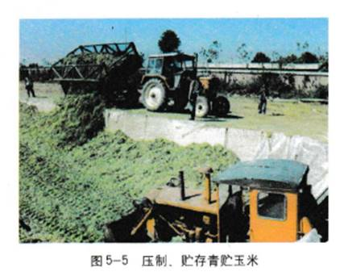
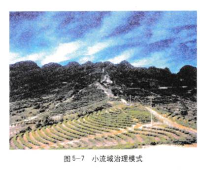
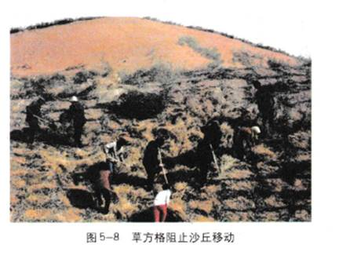
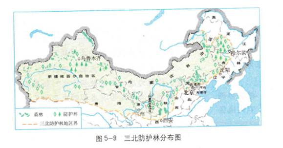
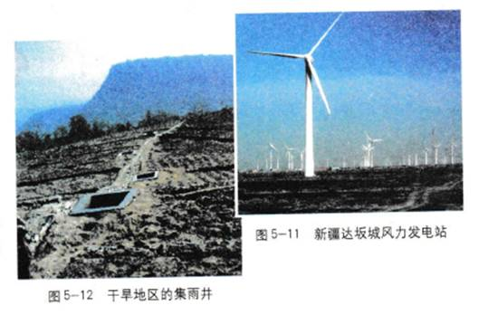
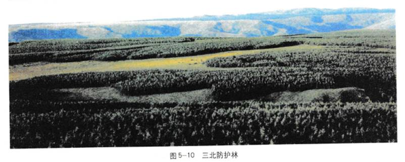

4.2生态工程的实例和发展前景
20世纪70年代以来，我国生态工程的理论和实践都取得长足进展。在某些研究领域已处于国际领先的地位，在实践上已应用于农业生产、环境保护、城镇建设等许多方面，取得了令世人瞩目的成就。
生态工程的实例
在进行生态工程建设时，应当根据当地的实际条件，因地制宜地进行。以下介绍的生态工程实例，都是我国生态科学工作者和群众在长期的生态工程建设实践中，不断完善而形成的。你可以结合当地实际，选取若干实例与同学共同分析讨论。
农村综合发展型生态工程
问题 在我国13亿人口中，有9亿多人口生活在农村，人多地少是突出的矛盾。怎样才能实现物质的多级循环利用，在资源有限的条件下有较多的产出，取得经济效益、社会效益和生态效益的全面提高呢？
对策 建立农村综合发展型生态工程，是实现这一目标的有效途径，这在我国已经有不少成功的实例。
案例 北京郊区的窦店村就是这方面的一个典型。窦店村在被作为农业现代化的试点后实施了以沼气工程为中心的物质多级循环利用工程：作物秸秆用来生产食用菌和饲料（图5-5）；饲料喂养畜禽；人、畜粪尿作为原料生产沼气；沼液用于水产养殖业；沼渣为有机农产品——“无公害蔬菜”施肥和喂养畜禽，从而达到了物质利用的良性循环，缓解了农村“三料”(饲料、燃料、肥料)的缺乏问题，提高了土地产出水平；同时畜禽、鱼、谷物、饲料等加工品也可输出到市场上出售。总之，农业生态工程能创造多种劳动力就业机会，增加农民收人，开发可以更新的资源，减少环境污染。目前，窦店村的生态工程建设已被作为样板在全国进行推广(图5-6)。
小知识
青贮：是指在玉米等作物没有完全成熟时，将果穗和秸秆一起收获切碎，通过厌氧发酵成为牛羊优质的青饲料。
氨化：是指利用氨水或氮素化肥处理稻麦秸杆，使之软化适口，提高其作为饲料的营养价值
蓝绿萍：一种具有固氮作用的藻类。
案例 我国甘肃陇南地区总结出了“九子登科”的治理模式：即山顶戴帽子(封山育林)，山腰系带子(还林还草，减少径流)，坡地修台子(坡地改梯田种植作物)，地埂锁边子(种植作物保护地埂)，荒地荒沟栽苗子(营造薪柴林)，山脚种果子(种植果园)，沟底穿靴子(各种拦戴坝、堤，拦蓄泥沙)，见缝插针钉扣子(利用零星地种植林果)，秋田盖罩子(覆盖地膜等保土耕作措施)。
讨论
分析甘肃省陇南县的“九子登科”模式，在说明“九子”措施含义的基础上，谈谈你对小流域综合治理生态工程的理解。
1.小流域的综合治理，“综合”表现在哪些方面？
2．为什么要针对不同的地形采取不同的措施？这体现了生态工程的什么原理？
3.从这一案例看，当地是怎么做到经济效益与生态效益相统一的?这一模式在其他小流域能够照搬吗？

大区域生态系统恢复工程
问题 据统计，1999年我国有沙漠化土地2.67×106km2，其中由于人类农事活动的不当而引起的荒漠化面积，就有近9×105km2。这些荒漠主要分布在西北地区。科学家的研究表明，造成荒漠化的因素及其影响力的大小依次为:过度樵采(32%)，过度放牧(30%),盲目开垦（27%），不合理利用水资源(9.6%)，其他(1.4%)。
对策 为了控制荒漠化的发展和水土流失，改善生态环境，提高人民的生活水平，我国实施了一系列森林或草原植被恢复的生态工程、水土保持的生态工程等，如退耕还林还草生态工程、防沙治沙生态工程(图5-8),“三北”（“三北”指华北北部、东北大部和西北大部)防护林生态工程(图5-9)；等等。

案例 退耕还林还草工程从1999年开始在四川省、陕西省、甘肃省试点进行到2000年扩大到25省区，至2002年底，累计退耕还林5.9×106hm2。“三北防护林”总体规划用73年时间(1978-2050)完成(图5-10)，东起黑龙江省宾县，西至新疆乌孜别里山口，横跨13个省551个县，总面积4.069×108hm2 。工程完成后三北地区森林面积可增加到6.057×107hm2，覆盖率提高到15 %。林木蓄积量达4.3×109m3，生态效益累计可达13000多亿元。该工程1 98了年被联合国环境规划署授予“全球500佳”之一，被誉为“世界生态工程之最”。
在进行上述生态工程建设的同时.还结合了其他配套工程，如风能工程(图5-11)、集水工程(图5-12)等。前者可以为人们提供价格低廉而无污染的电力，后者提高了集水、用水效率。